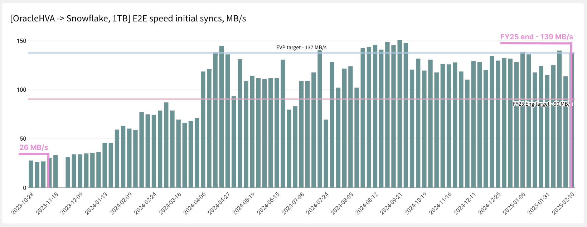
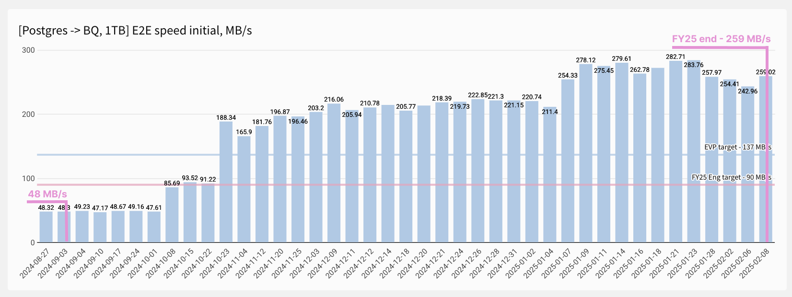
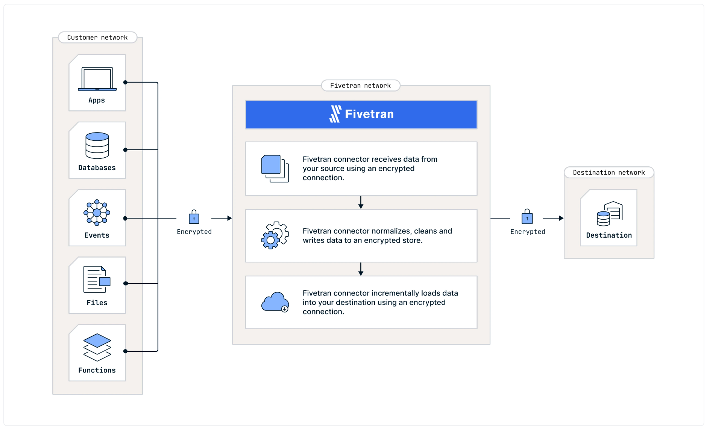
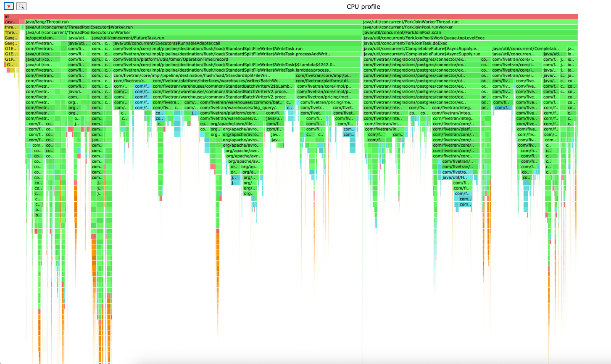
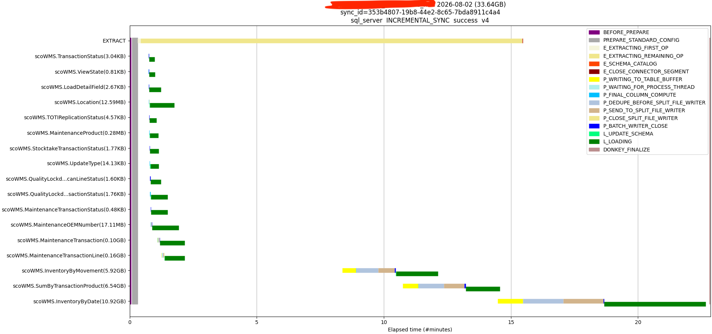
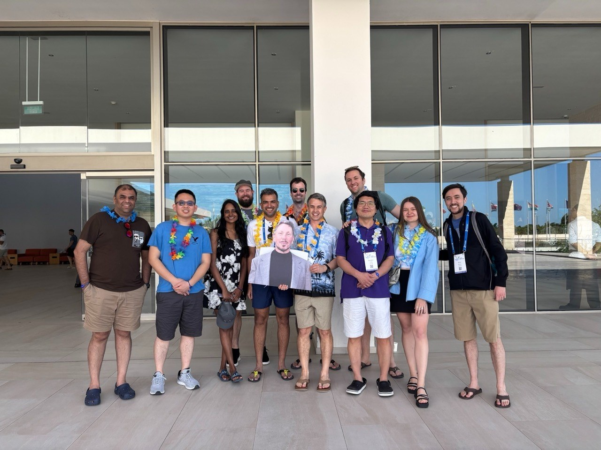

Fivetran性能工程复盘：AI如何改变两年提速之路
DataHot 速览
Fivetran启动高性能/低延迟（HSLL）计划，目标是将Oracle到Snowflake等管道提速2-3倍，即1TB数据两小时迁移（约137MB/s）。当时Oracle到Snowflake基准为26MB/s，Postgres到BigQuery为48MB/s。两年后分别达到139MB/s和259MB/s，生产吞吐量从7MB/s提升至70MB/s。文章总结了测量指标、定位瓶颈、围绕系统组织团队等性能工程方法，并谈及AI带来的改变。
为什么值得关注：数据从业者可借鉴Fivetran对分布式数据管道做性能工程的方法论，理解如何设定吞吐目标、衡量系统并推动整体改进。
本文目录 20 节
译文
AI 逐段翻译在2023年底，我们公开说：“我们需要让Fivetran快很多。”
这句话以前说过。工程组织一直在尝试让产品更快，并且已经取得了真正的进展。然而，我们的进展与目标相差甚远。我们的要求是让高容量数据库管道的速度提升2到3倍。我们以10%的增量发布改进，但令人沮丧的是，其中许多增量在投入生产后效果不佳。这里10%，那里8%，端到端的数字几乎没有变化。
具体的要求来自我们改进后的企业产品需求：在两小时内移动1 TB的数据，即约137 MB/s，持续、端到端，从客户的Oracle生产数据库到他们的Snowflake仓库。当时，我们的Oracle HVA到Snowflake初始同步基准测试运行速度为26 MB/s，Postgres到BigQuery为48 MB/s。在座没人相信通过现有做法能达到137 MB/s。
两年后，Oracle基准测试达到139 MB/s，Postgres到BigQuery达到259 MB/s。生产流程吞吐量从7 MB/s提升到70 MB/s——Fivetran核心原始容量提升了10倍。我们在交付了约50个项目后，完成了高速/低延迟（HSLL）计划，达到了每项吞吐量OKR。


这是我们如何实现这一目标的故事。数字是最不有趣的部分。重要的是我们开发的技术，用于测量分布式数据管道、决定要做什么，并围绕整个系统而非其部分来组织人员。建立性能工程能力是许多工程组织希望学习的经验。
[CTA_MODULE]
先测量：“如果你无法测量它，就无法改进它”
这句话被归功于几位不同的管理大师。对我们来说，这只是要解决的第一个问题。在让Fivetran更快之前，我们必须回答两个问题：快是什么标准，按此标准，Fivetran快吗？
选择指标
我们考虑了每秒移动的行数、延迟的几种定义以及数据量吞吐量。最终我们选择数据量吞吐量，即每秒兆字节数，作为主要指标。我们的客户有源数据库、文件存储或SaaS服务塞满了数据。他们关心的是该数据量移动的速度。每秒行数很诱人，因为它易于计数，但行不是一个固定的单位：一个有40列、包含三个TEXT字段的行和一个4列整数的行是不同的工作量。数据量是在不同连接器、数据集和时间之间保持诚实的单位。
数据量的定义比预期更难。不同的数据库引擎报告提取数据量的方式不同，因为它们读取日志的方式不同，计算字节数的方式也不同。将Oracle吞吐量与Postgres吞吐量进行比较，一度是在比较两种不同的东西。我们的性能工程老虎小队（稍后详细介绍）最终提出了序列化提取数据量——即我们自己的管道序列化数据的数据量，在我们控制的单一点测量——作为标准化指标。这一决定使得跨数据库比较成为可能，并且悄悄成为我们做的最有杠杆作用的事情之一。
对代码进行测量
选好指标后，我们在管道的某些检查点（基于时间和基于容量）以及每个阶段边界发出该指标。一个Fivetran同步有三个阶段：从源提取、在核心处理、加载到目标。我们需要每个阶段的数据量和持续时间，每个表、每次同步，写入我们稍后可以查询的地方。这些分别成为sync_stats和table_stats表在我们的BigQuery数据仓库中，之后我们构建的几乎每个工具和仪表板都从这些表读取。我们之前的工作已经收集了这些表，但我们最近的性能工程工作重点是向这些表添加正确的指标。

如果你计划进行性能工程，不要跳过这一步，也不要半途而废。系统的合理性能代理是改进该系统的前提。我们在进行任何优化之前花了数周时间进行测量，每一周都物有所值。
基准测试产品
测量告诉你生产环境正在做什么。这不能给你一个可重复的实验。为此我们需要基准测试，而基准测试一直是自那以来我们每次性能工作的第一步。
我们确定需要测试Fivetran同步数据的两种模式：初始同步和增量同步。每种都有变体，但这是产品运作的两种主要方式。对于数据本身，我们有三个选项：
- 使用已知的基准数据集，如TPC-C
- 清洗真实客户数据集并针对其进行基准测试
- 创建自定义数据集
我们选择了TPC-C，主要是因为一个基于TPC-C的基准已经为HVR（我们产品组合中的另一个产品）发布，这给了我们一个外部比较点。我们知道该数据集并不理想——早期实验表明，数据集形状（特别是行大小）在保持其他一切不变的情况下可能使吞吐量移动约20%。我们将其记为已知限制，然后继续前进。一个你实际运行的基准胜过你仍在设计的完美基准。
由此产生的基准套件现在涵盖十二个高容量场景，每周在我们的暂存环境中运行三次：
- Oracle HVA到Snowflake、Postgres到BigQuery、SQL Server到Databricks、MySQL到Snowflake
- 50 GB（跨140个表约97 GB数据库数据）和1 TB的初始同步
- 针对生成70 MB/s变更的实时源进行增量同步，数据保留20%和40%，分别每10分钟和每1分钟同步一次
每个参数都被固定：云提供商、区域为源端、目标端和同步工作器、实例类型、仓库大小、JVM堆设置。源端和目标端位于同一区域，以实现最大基准吞吐量，并消除网络延迟作为影响因素。我们早期的一个“改进”结果证明是基准测试的产物，因为其Snowflake实例与源端不在同一区域，这在调整基准时很重要。
基准测试也可以按需从CI启动，针对某个分支或启用了功能标志，这就是我们在候选更改进入生产环境之前测试它的方式。CPU分析使用async-profiler默认在基准构建中运行，火焰图作为构建产物返回，以HTML文件形式在云存储桶中轻松访问。

我们自动生成的、分桶的每个基准运行HTML配置文件的示例
构建一个工具来查看同步内部情况
聚合吞吐量告诉你同步很慢。它没有告诉你原因。因此我们构建了sync_progress_graph，一个工具，它拉取我们之前提到的统计表，针对给定同步，在一个时间轴上绘制每个表在每个阶段的详细进度。

这个工具改变了我们的思维方式。同步不再是一个数字，而变成了一幅图，在这幅图中，瓶颈通常肉眼可见：表逐个提取而不是并行提取的阶梯状；进程工作器空闲等待全局刷新的长而平坦的区域；一个巨大的表，其加载阶段超过了其他所有表的完成时间。你可以放大同步的最后几分钟，限制为最大的十个表，或者并排绘制同一连接器的三次连续同步，以查看更改是否实际产生了效果。
该工具最初是在实验分支上开发的。我们第一次团队回顾中的行动项之一就是将其移至主分支，以便每个人都能使用。尽早公开您的诊断工具；一个只有作者才能运行的工具几乎算不上工具。
记录每个基准结果
这是我最希望其他团队效仿的做法，也是听起来最不像工程的做法。
我们保留了一个电子表格——“盐滩速度日志”，以博纳维尔盐滩命名，人们在那里创造陆地速度记录。每行都是一个带日期的条目：谁做的，活动类型，测试了什么更改（附详情链接），然后是产生的端到端、提取、处理和加载吞吐量，以及背后的原始卷和持续时间。最终，我们升级到了Sigma中的一个专业仪表板，由相同的BigQuery统计数据驱动，电子表格的工作移交给了它。
除了数字，我们还保留了基准改进记录：一份关于基准基线中每个显著变化的连续散文记录，并附有解释。两年内大约有五十个条目，每个都有日期和名称——“2025年1月7日（加速Postgres 1TB初始同步）”，“2025年9月16日（加速SAP初始同步基准）”。
关于该记录有两件事至关重要：
- 它记录了回退和基线变化，而不仅仅是成功。相当一部分条目的标题是“...中的回退”或“...的基线变化”。当基准下降15%且没人知道原因时，那是一个发现，需要有一个归属地。当它下降是因为你故意更改了源实例类型时，也需要一个归属地，否则六个月后有人会追寻一个幽灵。
- 它足够详细地解释了因果关系，以便可以重新推导。不是“启用了功能标志，它变快了”，而是哪个标志，它在代码中改变了什么，哪些阶段移动了以及移动了多少。一个条目写道：启用SapHanaDbSendBatchCompleted将小型SAP初始同步基准提高了21%至94 MB/s，因为连接器现在在表完成提取时发出一个
BATCH_COMPLETED事件，因此核心立即开始处理，而不是等待100 GB的刷新缓冲区或GLOBAL_CLOSE；处理速度+6%，加载速度+18%。
拥有这份记录防止了我们重访过去尝试过的技术。历史背景、因果关系，没有重复努力。两年后，该记录是该计划产生的最有价值的文件。
改进：一个想法队列，其中大多数会失败
有了测量，改进本身变成了一个吞吐量问题：每周你能测试多少个假设，以及你能多便宜地消灭坏假设？
广泛头脑风暴，并预期超过一半会失败
这需要明确说出并重复，因为这是性能工作消亡的首要原因。如果团队认为每个想法都应该奏效，那么每次失败的实验都感觉像个人失败，人们停止提出冒险的想法，努力崩溃为安全的2%优化。我们的工作假设是，我们尝试的超过一半不会成功。正是这种期望使得尝试那些产生2倍效果的事情是安全的。
我们进行了大量头脑风暴，并且作为一个团队一起进行，所有学科都在场。我们的站会不是状态会议；它们是技术讨论，团队在第一次回顾时明确列出“富有成效的头脑风暴和深入技术讨论”作为要继续做的事情。
保持更改队列
我们不是测试一个想法并争论它，而是维护一个有序的队列，列出要应用于给定基准的潜在更改。一次一个，测量，记录——无论结果好坏。一位队友精确地总结了价值：“拥有更改队列给了我们一个目标计划。”队列保持了基准环境的忙碌，并防止团队过度投资于任何单一假设。
在本地原型，并设置时间盒
大型基准测试运行昂贵且缓慢。快速的本地原型和微基准测试让我们能在几小时内而不是几天内淘汰想法。而且每个开放性实验都有最终目标和时间盒，这是我们通过违反它学到的教训。我们的复盘诚实评估：我们在Postgres增量同步改进上花了太长时间，与不稳定的云环境斗争太久，并且追逐与我们的代码无关的基准波动太久。所有这三项本应设置时间盒并裁剪掉。
写下负面结果，并附上原因
“它没起作用”不是结果。为什么它没起作用才是结果，而且它往往是解锁下一个想法的关键。这是我们复盘中的“开始做”事项之一，它应该与基准改进记录一起放在任何团队的实践中。
老虎团队：优化整个系统，而不是局部
这是故事中最重要的部分，也是我最希望其他工程领导者带走的部分。
在此之前的好几年里，我们一直在优化局部。数据库团队让抽取更快。核心团队让处理更快。目标团队让加载更快。每个团队衡量自己的阶段，每个团队都报告了实际改进，但端到端吞吐量几乎没动。
原因一如既往。在管道中，你不是有三个性能问题，而是只有一个。加速非瓶颈阶段毫无收益。更糟的是，我们的局部优化有时会适得其反：让抽取更快的更改会淹没下游缓冲区，使处理变慢；帮助某个阶段的更改只会将瓶颈转移到下一个阶段，而那里由不同团队负责且未做规划。我们是在跨组织边界打地鼠，而边界才是问题所在。
因此在2023年底，我们组建了一个临时老虎团队——Ellison团队，以某位数据库巨头命名，因为第一个目标是Oracle HVA到Snowflake。章程明确这是一项实验：团队在达到至少60 MB/s、宣布工作完成或宣布实验不成功时解散。

是什么让这起作用：
每个学科，以及架构的三个部分
连接器、核心、目标，加上基础设施、质量工程和项目经理。整个管道在一个房间里有代表，所以当瓶颈转移时，它转移到坐在同一张桌子上的某个人。
无代码所有权边界
从章程开始，强调原文：“该团队的所有成员都可以参与对同步或基础设施的任何部分进行更改。这项工作仅受技能/知识限制，不受团队或全球组织边界限制。” 并直接指出了失败模式——过去我们听到过“这不属于我们代码部分”。这句话被禁止了。每个团队成员都被期望强烈赞同这一点，它遏制了以前的思维模式。
真正的、受保护的重点
团队成员免于值班、事件处理、升级、面试、季度规划、所属团队会议和全员大会。章程的措辞：“想法是将你实际工作时间的100%专注于这项工作。” 这是一个计算过的风险，增加了他们“母队”的负担，而这项努力不一定成功。
一个目标，狭窄
一个基准，一个数字，一个仪表板。团队成员的复盘笔记：“一个共同目标。狭窄的重点有助于优先处理能改善基准的工作。”
轻量级流程，重文档
我们举行了每日站会以设定第二天目标，并采用看板风格而不是估算冲刺。团队与工程领导层定期举行双周演示，以强调规律的进展节奏。我们甚至尝试了子团队故意竞争等实验：当我们需要并行化某个核心阶段时，我们分成红队，从现有实现开始，和蓝队，从零编写新实现。这帮助我们理解“抛弃一切”的方法是否会带来更好的结果。
明确的简化假设，预先协商
早期团队坐下来问自己允许做什么假设：仅初始同步？目标为空？没有重复键，因此不需要去重？仅插入，因此不需要MERGE？类型预先知道，因此不需要推断？每个答案解锁了不同程度的速度，并花费了不同程度的通用性。正如一位工程师所描述的张力：提供完全通用的解决方案而不做假设可能意味着你永远达不到北极星，但做过多的假设意味着交付不切实际的东西。在编写代码之前就明确同意这条线在哪里，节省了以后数月的争论。
结果不言自明。并行核心，团队的第一个大项目，为一层数据库暂存基准带来了2.5倍的加速，并已推广到所有生产连接器。多线程初始导入使Oracle HVA的提取时间减少了5倍，SQL Server端到端加速2倍，Postgres 3倍，MySQL提取加速3.3倍。一种自定义序列化格式——比Protobuf更快，读取值无需反序列化——又为一级初始同步节省了20%的时间。MySQL binlog客户端重写将提取速度提高了三倍。Parquet写入器内存占用减少增加了30%的端到端性能，并被数据湖目标采用。
这些都不是阶段局部优化。它们是整个系统的更改，阶段局部团队不会提出，不被允许做，也无法衡量。
我们学到的：性能工作的参考
如果你是一位工程师或工程领导者，开始一项性能工作，这是以上所有内容的简短版本。
- 选择一个反映客户感知工作的主要指标。确保它在您需要比较的系统之间具有可比性；如果不是，请发明一个标准化版本并统一使用。
- 先测量，再优化。在每个阶段边界，为每单位工作量，将您自己的相关指标（Fivetran 的容量/持续时间）发送到可查询的存储中。为此预留数周时间。这不是开销；这是基础。
- 先基准测试，再改进。构建一个可重复的实验，涵盖产品的主要操作模式。固定所有可能的环境变量，并记录无法固定的那些。
- 如果存在标准数据集/模式，请使用它。了解其偏差，记录下来，不要让数据集完美主义拖延您。
- 构建一个可视化单单位工作随时间变化的工具。聚合数据会告诉您它慢。时间线会告诉您在哪里。然后将该工具放在一个分支或仓库中，让所有人都能使用。
- 记录每个结果，包括回归和基线变化，并附上解释。历史背景是阻止您每六个月重新争论同一问题的方法。
- 预期超过一半的想法会失败，并大声说出来。这是文化上的前提，而不是统计数字。
- 保持一个有序的变更队列，并一次测试一个。了解每个变更的效果，无论是好是坏。
- 为开放式实验和基础设施之争设定时间限制。在开始每个实验时，为其设定结束条件。
- 写下负面结果及其原因。
- 优化整个系统，而不是部分。局部优化会移动瓶颈；它们不会消除瓶颈。
- 如果您的组织边界与管道阶段匹配，请组建一个跨职能团队并暂时搁置边界。明确地，以书面形式，并获得领导层的支持。
- 真正保护团队的专注力。没有值班，没有升级，没有主场团队会议。如果您做不到，您只是在运营一个工作组，而不是老虎团队。
- 信任队友的测量结果。我们浪费了数周时间重新证明结果，因为我们并不总是信任测量结果。如果某个数字存在疑问，与其重新进行调查，不如举行一次深入讨论会议，与团队一起解决。
- 在从环境中得出结论之前，先稳定环境。在不稳定的基础设施上进行基准测试，得出的结果反映了基础设施，而不是您的代码。
从临时团队到永久能力
老虎团队是一种赌注，即临时结构可以解决永久结构无法解决的问题。这个赌注有到期日。如果您永远保留老虎团队，您只是进行了重组——而且很糟糕，因为其成员现在有两个归属。
我们在每个季度结束前两周审查了埃里森团队的进展，并每次决定是否继续。当计划达到目标后，我们关闭了它并解散了埃里森团队。其文档作为历史记录留在网上，人们仍在阅读多年前的笔记。
性能不是您完成的项目。当您停止测量的那一刻，熵就会收回成果：依赖项升级、热循环中无关紧要的重构、目标客户端中的新默认值。我们需要的不是又一个项目，而是一种永久能力。
那就是我们的德威特团队，以大卫·德威特命名，他是数据库系统和基准测试领域许多基础研究的计算机科学家。德威特团队隶属于平台工程部，负责：
- 同步吞吐量和延迟改进
- 基础设施和运行时效率
- 基准测试和性能实验
- 性能分析、诊断和瓶颈分析
- 性能工具、自动化和回归预防
- 长期可扩展性和改进的成本利润率，而无需线性增长的基础设施成本
范围有意识地超越了连接器层面的调优，进入平台级别的性能工程。德威特团队制定季度路线图，维护基准测试套件，并且——我认为一个被低估的细节——有时直接与销售和销售工程部门合作，为特定客户情况设计性能改进。性能是客户从 Fivetran 购买的一项功能，拥有一支可以针对真实交易进行性能优化的团队是真正的商业优势。
两年后，老虎团队的实践已经成为 Fivetran 进行性能工作的标准方式。基准测试每周运行三次，无论是否有人关注。基准改进记录仍在不断新增条目。变更队列仍然是一个队列。
然后，基础发生了变化。
[CTA_MODULE]
补充来源
1 个信源 · 1 篇报道这篇内容对你有用吗？
反馈只用于改善内容筛选，不等同于收藏